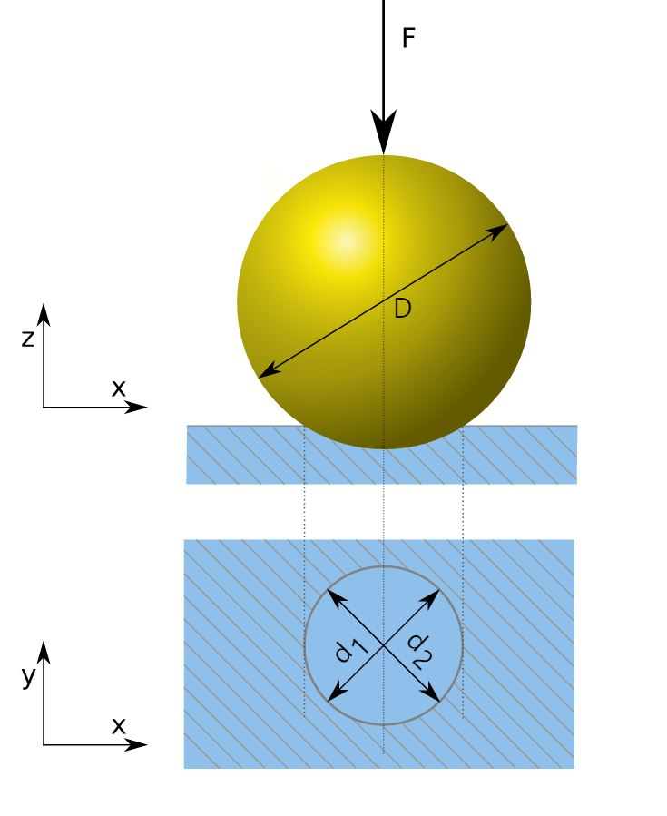
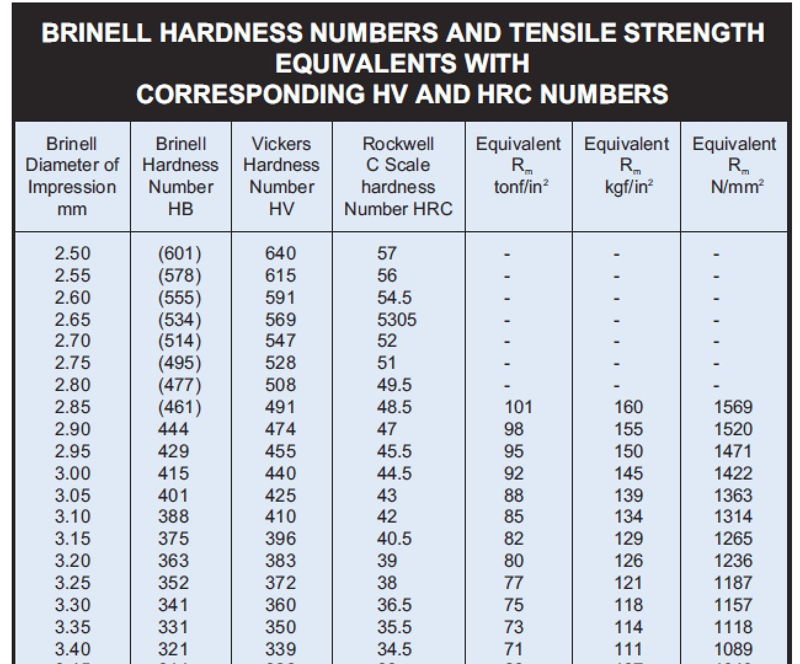

The Brinell scale /brəˈnɛl/ characterizes the indentation hardness of materials through the scale of penetration of an indenter, loaded on a material test-piece. It is one of several definitions of hardness in materials science.
Proposed by Swedish engineer Johan August Brinell in 1900, it was the first widely used and standardised hardness test in engineering and metallurgy. The large size of indentation and possible damage to test-piece limits its usefulness.


Ref : https://www.efunda.com/units/hardness/convert_hardness.cfm?HD=Approx%2E%20TS&Cat=Steel#ConvInto
An approximate relationship between the hardness and the tensile strength (of steel) is,

where HB is the Brinnell Hardness of the material, as measured with a standard indenter and a 3000 kgf load.